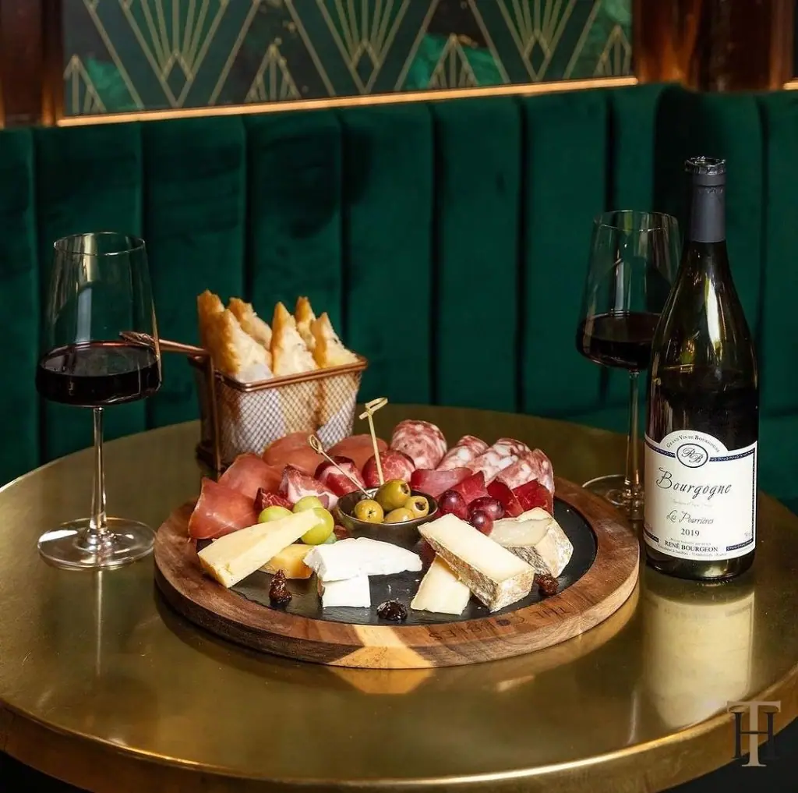

Brass Table Tops
Brass table tops manage to be something few other metals or designs can be, timeless. They are as popular now as they were a hundred years ago and will continue to be used across the world for many years to come. Brass table tops would look fantastic in bars, restaurants, barber shops, kitchens or the home. We create unique brass table tops to order using natural or aged brass. All table tops are made to order, cut to size and either provided as metal or as a complete table top complete with wood. Aged brass table tops can be finished in a tough lacquer to help preserve the beautiful patina for the lifetime of the piece. If you want a unique, brass table top handmade by craftsmen, contact our team for a quote!


Cut to size
Each of our bespoke finishes can be purchased in sheets cut to your size, perfect for your project.
- Pricing includes delivery and turnaround time is just 5-8 weeks
- Each piece is coated in a gloss finish lacquer that prevents the sheet from further aging

Ready to go
We can provide bespoke cut metal with each of our finishes being wrapped around wood and lacquer finished. Get in touch for a bespoke quote . If you’re a business please use our Bespoke Quote for Businesses form .
Handmade Brass Table Tops
Every brass table top we create is unique as we make them by hand. Our craftsmen design and build strong, robust surfaces suitable for commercial or home use in a number of finishes.
Those finishes include:
- Cambridgeshire finish – Light, easy going mill brass with genuine depth
- Somerset finish – Multi-level brass patina with a lot of depth and character
- Wiltshire finish – Simple and very attractive finish that offers vibrant colour
- Natural brass finish – The natural beauty of brass laid bare
Each finish is applied by hand by our craftsmen. Aged brass is artificially aged using specialist processes until the desired patina is achieved. Ageing is then stopped.
All aged brass table tops can be sealed in lacquer to help protect the look and quality of the metal.
HOW WE CREATE BESPOKE BRASS TABLE TOPS
All brass table tops begin life as brass sheets. Sheets are then cut to the desired size and either shipped or wrapped around wood to complete the table top. Aged brass finishes are artificially aged until they reach the desired appearance and then sealed in lacquer.
We provide tabletops as metal for you to fix or as a complete table top fitted around wood and ready to install. Please get in touch using our bespoke quote form so we can offer advice specific to your project.
CARING FOR YOUR BRASS METAL TABLE TOP
Whether you use your table top in the home or commercially, the tough lacquer will help preserve the quality of the metal and the finish.
One of the major benefits of these products is their low maintenance. Simply clean regularly with warm soapy water and a soft cloth and the brass table top should last for many years.
Avoid using abrasive cleaners and chemicals to avoid accelerating lacquer wear. We include a full care guide with every metal table top we supply.
Brass table tops offer a look and feel few other furniture types can match. Order yours today!


If you can dream it, we’ll make it.
Bars, balustrades, staircases, worktops, cladding and pieces that don’t have a name yet. Our designers and craftspeople work in brass, copper, zinc and steel, and alongside wood.